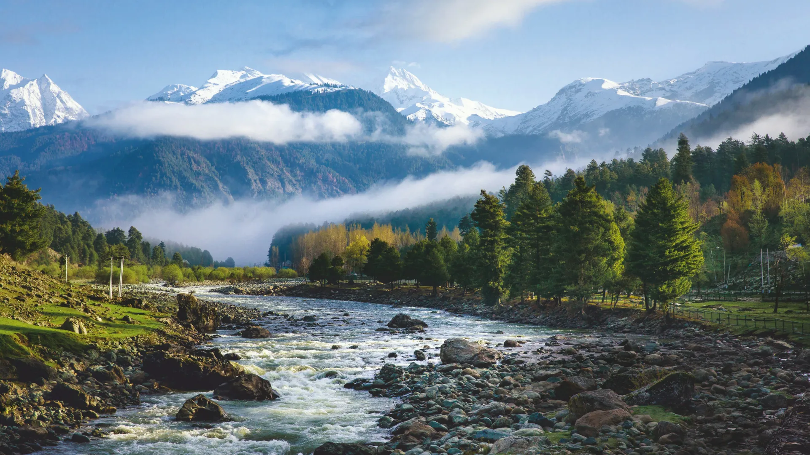
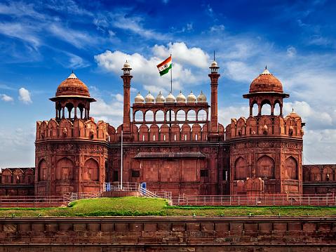

This is India’s highest saltwater lake. It is located at the height of 14,271 feet and is situated in the backdrop of the Himalayas. It is in the state of Ladakh.
Ladakh, India

This is a war memorial located in the heart of India’s capital, Delhi. It is an archgate and was made out of sandstone. The monument was created to honor Indian soldiers who died in World War One.
Delhi, India

This is a state located next to the Chinese border and is known as the Land of the Gods. It has crystal clear rivers and houses many hill stations, most notably, Chail.
Himachal Pradesh, India

Located in the Pahalgam valley in the state of Kashmir, this town is known as Shepards Valley. It is known for beautiful hiking and fishing spots and hosts an annual pilgrimage to an Hindu shrine known as Amarnath Temple.
Kashmir, India

Located in Amritsar, Punjab, this is the holiest site in the Sikh religion. It is known for its golden domes and it has a pond for visitors to take a dip in the holy water. It is open to all religions and provides free food to all visitors, irrespective of being Sikh or not.
Punjab, India

Located on the west coast of India, on the Arabian sea, Kutch is known for its vast salt marsh land, which gives the area the look of an unending white dessert.
Gujurat, India

Located in Agra, the Taj Mahal is a mausoleum built by Emperor Shah Jahan for his wife, Mumtaz Mahal. The building is known for its perfect symmetry and its use of rare gems and white marble.
Agra, India

Located in one of the seven sister states, Gangtok is known for numerous buddhist monasteries and having direct access to Himalayan mountain ranges.
Sikkim, India

Located in the state of Nagaland, Dzukhou Valley is known for its natural beauty and its abundance of flowers. The valley is known for its hilly landscape and cloudy weather.
Nagaland, India
